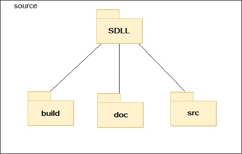

|
SDLL
|
Il progetto si compone di un singolo package, costituita da tutti gli elementi che riguardano la definizione delle regole del linguaggio, la creazione del lexer ed il parser per la realizzazione del compilatore, oltre che contenere le librerie necessarie per interfacciare bison con il linguaggio scelto (nel nostro caso abbiamo utilizzato C++ per implementare le funzionalità). Il diagramma dei package è mostrato in seguito:
Descrizione dei package
SDLL: è il package radice del progetto flex/bison, in cui sono contenuti i file di configurazione dello sviluppo del linguaggio stesso, oltre che l’eseguibile del linguaggio ed i file che descrivono le basi di conoscenze: